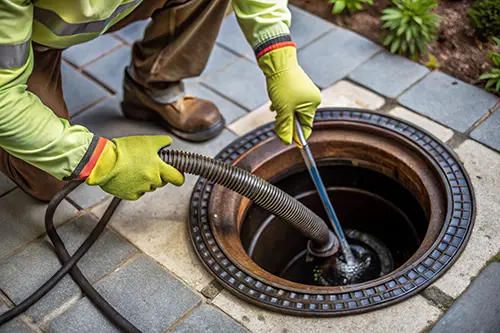
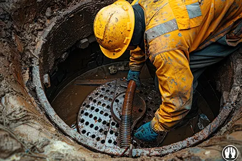
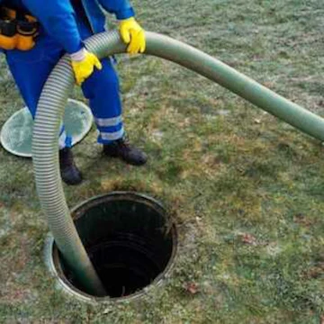
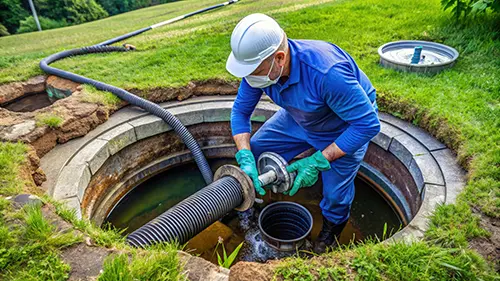
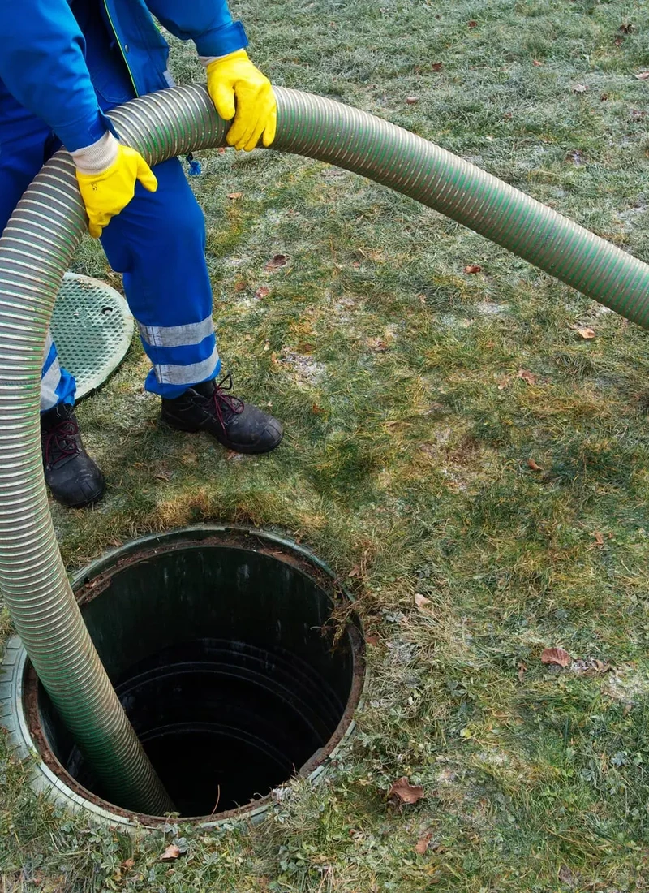
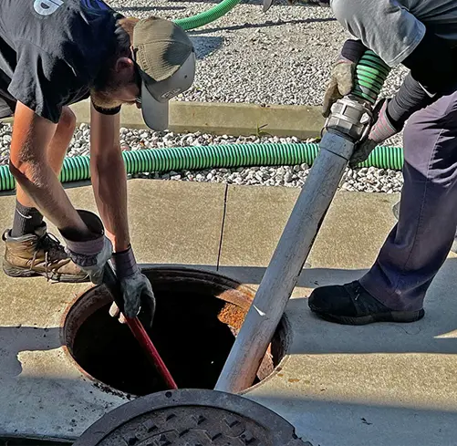
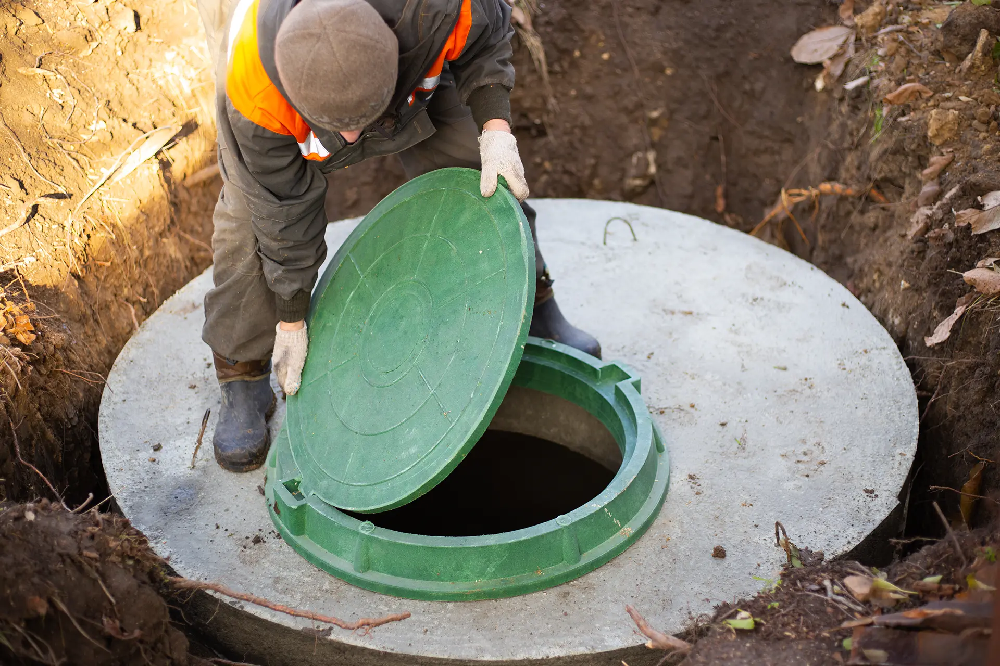

20+ Years Field Experience
Seasoned local sanitation experts with two decades of service across Balapur, LB Nagar, and Hyderabad. We diagnose and resolve deep septic and drainage blockages quickly.
Balapur · LB Nagar · Hyderabad

Dealing with bad smell, toilet backflow, or tank overflow? With 20+ years of local experience across Badangpet (HQ), Balapur, LB Nagar, and Greater Hyderabad, we deliver heavy-duty vacuum suction pumping, thorough drainage blockage clearing, and 100% eco-friendly certified disposal.
From independent villas and housing colonies to 100+ flat gated apartments, commercial restaurants, and industrial plants — we deploy high-power vacuum tankers and trained technicians to solve sewage issues without odor or mess.

ResidentialDesigned for independent houses, villas, and residential complexes. We quickly eliminate toilet bubbling, slow drainage, and bad smells with powerful suction hoses that keep your garden and compound spotless.

CommercialTailored for restaurants, malls, function halls, schools, and business offices. We clean high-capacity septic reservoirs and grease trap lines during off-peak hours so your commercial operations are never interrupted.
Comprehensive Sewage Treatment Plant maintenance, overflow resolution, and deep biological sludge removal for large gated communities, corporate IT parks, and industrial complexes in Hyderabad.
 Sludge Removal
Sludge Removal
Over years of usage, hardened sludge settles at the bottom of septic chambers, choking natural percolation. Our high-pressure jetting and vacuum liquefaction break down and extract all compacted waste.

Labour CampsHigh-density labor camps and active construction sites generate continuous heavy sanitary loads. We provide routine scheduled pump-outs and emergency clearances to prevent health hazards and site shutdowns.
Specialized waste extraction for manufacturing plants, industrial estates, warehouses, and fabrication yards. Our heavy industrial suction trucks handle large-volume containment chambers safely and systematically.
Medical and healthcare premises require non-negotiable hygiene, zero atmospheric contamination, and zero spills. Our sanitization specialists operate under strict biosafety protocols with closed-circuit suction pumps.

PreventativeRoutine inspection and chamber maintenance that catches blockages, pipe cracks, and sludge buildup before sewage overflows into your living spaces or foundation walls. Saves thousands in costly property repairs.
We combine 20+ years of local field experience, modern high-power vacuum suction tankers, and certified eco-friendly disposal to solve critical sewage issues with zero mess and zero odor.
20+ Years Field Experience
Seasoned local sanitation experts with two decades of service across Balapur, LB Nagar, and Hyderabad. We diagnose and resolve deep septic and drainage blockages quickly.
Balapur · LB Nagar · Hyderabad
Heavy Vacuum Tanker Fleet
Equipped with commercial-grade vacuum pumps from 3,000L to 12,000L capacity, capable of lifting dense, compacted sludge from basement tanks and narrow residential alleys.
3,000L to 12,000L Tankers
High-Pressure Jetting Systems
200+ bar hydro-jetters break down hardened grease, tree roots, scale, and stubborn debris inside underground lines, restoring 100% full flow capacity.
200+ Bar Hydro-Jetters

24/7 Rapid Emergency Response
Sewage overflow cannot wait. Our emergency teams operate 24 hours a day, 7 days a week, reaching your premises within 30 to 45 minutes anywhere in Hyderabad.
30 – 45 Min Dispatch
100% Authorized Eco-Disposal
We strictly discharge all collected waste at government-authorized municipal treatment plants in compliance with environmental standards. Zero illegal dumping.
Govt Authorized Treatment
Honest & Transparent Rates
Transparent pricing quoted upfront based on tank size and site conditions. No hidden fees, no sudden extra costs after opening chamber covers.
Upfront Fixed Pricing
Simple, rapid 4-step execution across Greater Hyderabad:
A look at our specialized high-capacity vacuum suction tankers, high-pressure hydro-jetters, and deep sludge extraction machinery operating across Greater Hyderabad.




Read real, unfiltered reviews posted directly on Google by homeowners, villa residents, and apartment associations across Greater Hyderabad.
✓ Google Verified Reviews · 15,000+ Cleaned Across Hyderabad
Planning routine cleaning or facing an urgent sewage blockage? Contact our Hyderabad dispatch team for tanker arrival times, capacity specifications and a free, transparent estimate.
Common questions about septic tank cleaning, emergency response, costs, and maintenance in Hyderabad:
Yes, absolutely! We handle urgent sewage overflow, toilet backflows, pipe bursts, and drainage choke-ups 24 hours a day, 7 days a week including Sundays and late-night emergencies. Our rapid tankers reach most Hyderabad locations within 30 to 45 minutes.
Our pricing is completely honest and based on actual site conditions: tank capacity (e.g. 3,000L to 10,000L+), volume of solidified sludge, pipe reach distance from the tanker, and time of service. We quote a fixed, transparent price upfront before starting the work.
For an average family of 4 to 6 members, a residential septic tank should be inspected and pumped every 1 to 2 years. High-usage commercial premises, restaurants, and apartments require periodic desludging every 3 to 6 months to prevent sudden blockages.
No. We use heavy-duty sealed vacuum suction hoses that transfer waste directly from your underground chamber into our closed tanker truck without atmospheric exposure. Afterwards, we wash down the chamber opening and apply bio-neutralizers to eliminate residual odors completely.
Yes, we specialize in complete STP plant desludging, settling chamber cleaning, aeration tank maintenance, and commercial grease trap pumping for apartments, hotels, and industrial sites across Hyderabad.
We strictly adhere to Telangana State Pollution Control Board and municipal environmental regulations. All collected sewage is transported and safely discharged into authorized government sewage treatment facilities. We do not engage in illegal open dumping.

Whether you need urgent sewage removal, drainage blockage clearing, or scheduled society maintenance, our fleet is ready to dispatch now. One call saves your property from severe sewage damage.